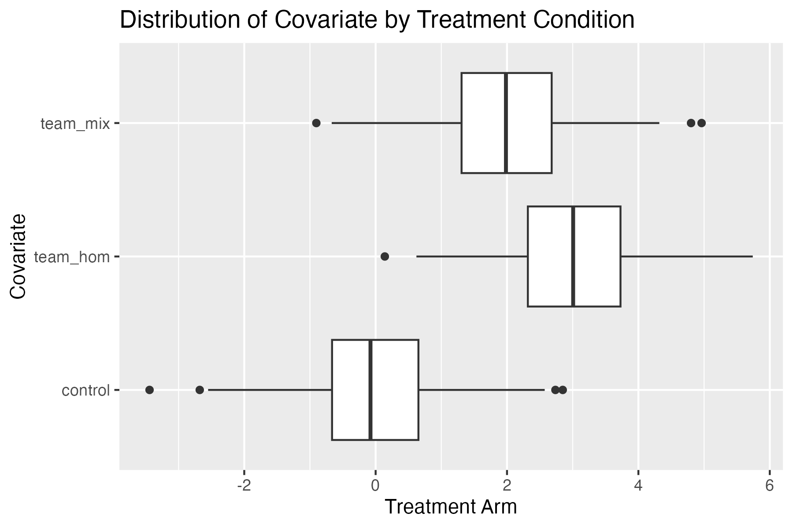

pset1_data <- read_csv("https://www.dropbox.com/scl/fi/fc64m81fu12nvbzd1x6h4/pset1_data.csv?rlkey=vy6hy3gh1sqc0j6byfmxx0kny&dl=1")Problem Set 1
Instructions
Please submit this assignment on Gradescope by February 27.
You will need to submit the following files:
- An .qmd file (or “Quarto file” when spoken) that is a plain-text file that contains the text of your write-up and the code used to do all of the calculations for the assignment. You can write directly into this file in RStudio. You can download the qmd version of this file at this link: pset.qmd.
- An output .pdf file that contains the compiled version of the qmd file. Usually, you might call this the write-up and it will be nicely formatted.
Background
In this problem set, we will analyze data from the following paper, published by a former MIT graduate student:
Lowe, Matt. “Types of Contact: A Field Experiment on Collaborative and Adversarial Caste Integration.” American Economic Review 111, no. 6 (June 2021): 1807–44. https://doi.org/10.1257/aer.20191780.
An overview of the paper that I recommend you read is available at the following link: https://www.povertyactionlab.org/evaluation/promoting-intercaste-harmony-through-sports
This field experiment was conducted in India and designed to test how different types of contact between members of different castes affects social relations. Like the Mousa paper, this study uses sports—in this case cricket—to create opportunities for sustained contact between members of different groups. The study took place in localities where residents tended to be segregated by caste and where cross-caste interactions were rare.
While on a similar topic as the Mousa paper, the Lowe study has several additional components to the research design. The three main treatment arms that individual cricket players were randomly assigned to are:
- Homogenous teams: Assignment to a team with only members of the same caste.
- Mixed teams: Assignment to a team with at least 1 team-mate from a different caste. Note that the proportion of players from different castes on the team was also randomly varied.
- Pure Control: Members of the control group were not assigned to a team and did not play in the local league.
In addition to these treatment arms, the 8 matches in each tournament were randomly constructed. This second element of randomization created variation in the proportion of players from other castes that each player played against. Lowe argues that this variation can be used to test the effect of adversarial contact, which may have different effects than collaborative contact.
In this problem set, we will explore both forms of contact. You will use data visualization to both assess the validity of the design and to explore the effects of the treatment.
The pset1_data data includes the following variables:
treat_cond: whether or not the player was assigned to pure control (control), mixed teams (team_mix), or homogenous teams (team_hom).prop_teammates_other_caste: for players on a team, the proportion of teammates from a different caste. For players not on a team, this variable is coded as missing (NA).bins_teammates_other_caste: a categorical version ofprop_teammates_other_castethat divides the variable into 4 bins: “0-25%”, “25-50%”, “50-75%”, and “75-100%”.prop_opponents_other_caste: the proportion of opponents from a different caste.bins_opponents_other_caste: a categorical version ofprop_opponents_other_castethat divides the variable into 10 quantile bins.bin_midpoint_opponents: the midpoint of the bin forprop_opponents_other_caste.baseline_prop_other_caste_nbrs: the proportion of neighbors from a different caste as measured before assignment to teams.baseline_bowl_test_speed: Maximum bowling speed in the pre-tournament test.n_other_caste_friends: After the conclusion of the tournaments, respondents were shown photos of all other players in their league and asked to identify those they considered friends. This variable measures the number of named friends from other castes.n_other_caste_future_friends: This post-tournament variable measures the number of players from other castes that the respondent is currently friends with or who they would like to be friends with.
Import the Data
The following code will import the data needed for this assignment:
Problem 1
Unlike in the Mousa paper, this study has a third treatment arm: the pure control group. What is the role of this group in the research design? What questions does it allow the researchers to answer that the two arm design used by Mousa does not?
Problem 2
Let’s examine if the randomization was successful. The first step is to examine whether players assigned to the different treatment arms are similar in terms of observable characteristics.
We will focus on the following two variables:
baseline_prop_other_caste_friendsbaseline_bowl_test_speed
Using ggplot2, recreate the following box plot for each of the two variables. This plot was generated using fake data, but you should use the real data from the Lowe study. You might take a look at the geom_boxplot function in the ggplot2 documentation to get started.

What can you conclude about the extent to which the design created comparable groups?
Problem 3
Box plots like the ones you created in Problem 2 are useful for comparing the distribution of a variable across different groups. An alternative way to compare the distribution of a variable across groups is to use a density plot.
Using ggplot2, create a density plot for the variable baseline_prop_other_caste_nbrs for each of the three treatment arms. Overlay the densities from each group over each other, but use different colors to distinguish each group.
Problem 4
Estimate the average treatment effect of being assigned to a mixed or homogenous team (relative to the control group) on n_other_caste_friends and n_other_caste_future_friends. Report these estimates in a figure or a table. What do these estimates suggest about the effect of playing on a homogenous team and the effect of playing on a mixed caste team?
Problem 5
The Lowe paper also examines the effect of the proportion of teammates from other castes on the number of friends from other castes. Calculate the average of n_other_caste_future_friends for each of the four bins of prop_teammates_other_caste.
Report these averages in a figure or a table. What do these averages suggest about the effect of the proportion of teammates from other castes on the number of friends from other castes? Does this analysis tell you something different from the analysis in Problem 4?
Problem 6
Now let’s examine the effect of the proportion of opponents from other castes on the number of friends from other castes. Calculate the average of n_other_caste_future_friends for each of the ten quantile bins of prop_opponents_other_caste. Plot these averages against the midpoint of each quantile bin (bin_midpoint_opponents).
What does this plot suggest about the effect of “adversarial” contact? Given the collective results of the experiment, how should we think about the “contact hypothesis”?